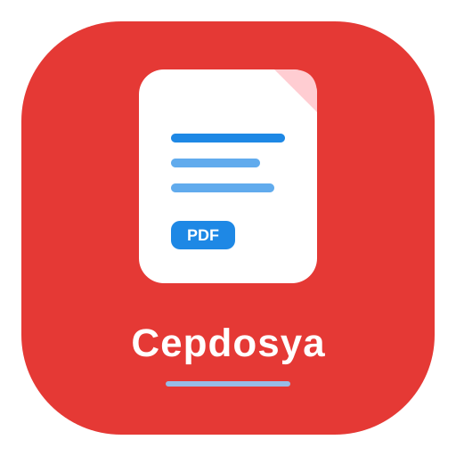

Her cihazda kolay görüntüleme
Dosyanı seç.
Hemen aç.
Belgeni buraya bırak
veya cihazındaki dosyalar arasından seç
TÜM DOSYA TÜRLERİEN FAZLA 50 MB
Dosya seçimi cihazındaki dosya seçiciyi açar.

CepDosyaBelgelerin için güvenli alanveya cihazındaki dosyalar arasından seç